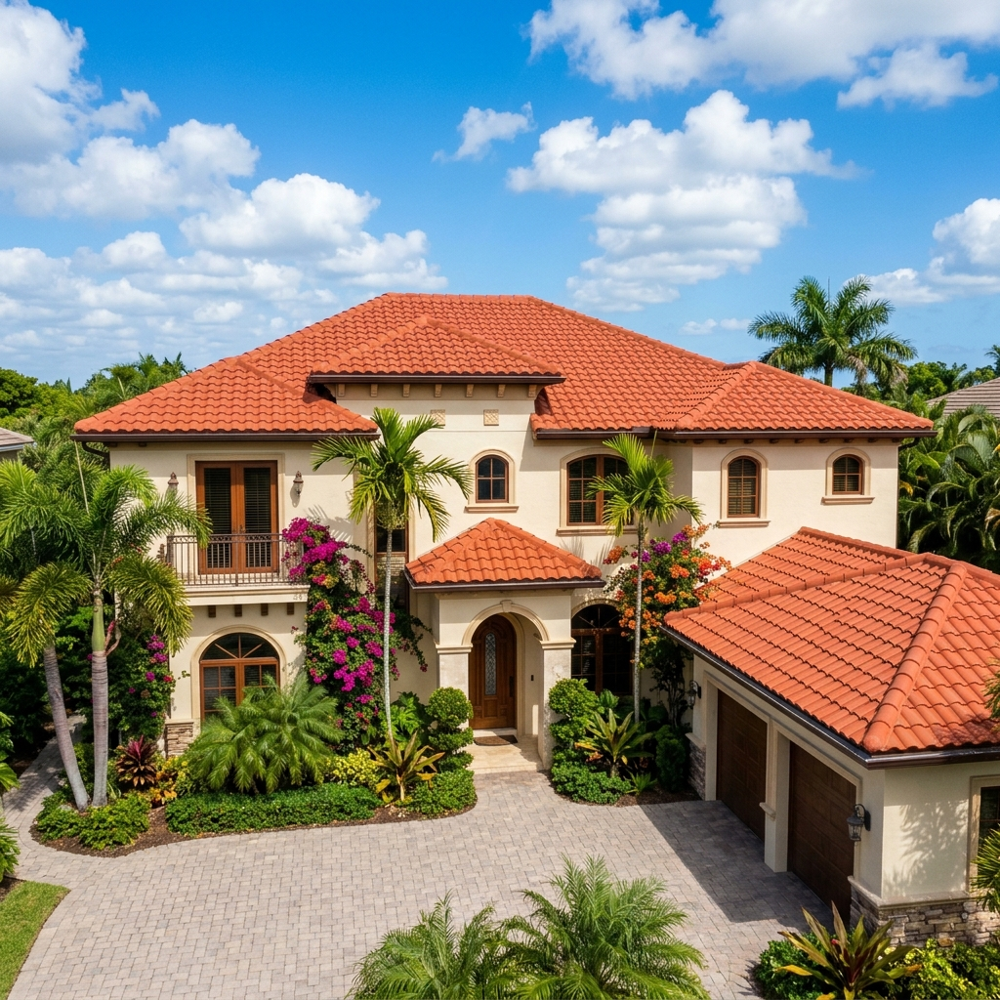

A mansard roof is a distinctive architectural style featuring a dual-slope design on all four sides of the structure. The lower slope is near-vertical and highly visible from the street, while the upper slope is much flatter and often concealed from ground view. In South Florida, designing, maintaining, and replacing a mansard roof requires meticulous attention to flashing transitions, waterproofing, and high wind resistance due to the region's humid, storm-prone climate.

Understanding the Unique Mansard Roof Structure
The mansard design originates from French classical architecture and serves two primary purposes: producing a dramatic curb appeal and maximizing usable attic space. The steep lower slope behaves almost like an exterior wall, while the flatter upper section behaves like a standard flat roof. In Broward County, this combination of steep-slope and low-slope roofing systems means that different materials and installation techniques must be combined seamlessly to prevent moisture leaks and wind damage.
Breakdown of Mansard Roof Material Properties
Since the slopes of a mansard roof are so different, they require a combination of distinct roofing systems. Choosing the correct materials for each section is essential for performance and aesthetics:
- Steep Lower Slopes: This portion is highly visible and must endure significant wind uplift. Common choices include architectural asphalt shingles, concrete or clay tiles, standing seam metal panels, or stone-coated steel tiles that mimic classic Mediterranean aesthetics.
- Flatter Upper Slopes: This section handles slow-draining water and requires commercial-grade flat waterproofing membranes. The preferred options are single-ply TPO, multi-ply modified bitumen, or liquid-applied silicone roof coating systems that create a seamless water-resistant shield.
Pros & Cons of Mansard Roofs in Broward County
Before purchasing or remodeling a home with this roof style, weigh these critical local pros and cons:
Wind & Heat Resistance Ratings
In South Florida's High Velocity Hurricane Zone (HVHZ), mansard roofs must meet rigid wind and heat standards. Asphalt shingles installed on steep lower slopes must be rated for wind resistance up to 130 mph or 150 mph under ASTM standards, using a specialized six-nail fastening pattern. Standing seam metal is highly recommended because of its mechanical fasteners and high-performance wind ratings. For the upper flat portion, heat resistance is paramount. A high SRI (Solar Reflectance Index) TPO membrane is ideal to reflect solar heat, reduce cooling demands, and protect the underlying roof structure from thermal shock.
Warranty Considerations
Because a mansard roof combines steep-slope and low-slope materials, managing manufacturer warranties can be complex. Major manufacturers like GAF, CertainTeed, and Owens Corning offer separate warranties for their residential shingle lines and their commercial-grade flat membranes. To avoid finger-pointing between material suppliers if a leak occurs at the transition seam, homeowners should work with a factory-certified roofing contractor who can install a unified system and offer an extended, dual-material labor and material warranty.
Maintenance & Inspection Schedule
Routine maintenance is critical to prevent leaks at the delicate transition points where the steep lower slope meets the flat upper slope. Follow this proactive maintenance schedule:
- Pre-Storm Inspections (April - May): Have a professional check the flashing along the roof-to-wall transitions and look for loose or cracked tiles or shingles before hurricane season.
- Drainage Clearing (Every 6 Months): Clean the valleys, gutters, and scuppers along the flat upper section to prevent water from pooling and seeping beneath the roof membrane.
- Sealant Evaluation (Annual): Check the rubber boots, flashing seals, and fastener penetrations around dormers, vents, and chimneys.
Need Help With a Mansard Roof?
Ensure your South Florida mansard roof is structurally sound and prepared for the heavy rain season. Planet Roofing provides expert inspections, repairs, and complete dual-system replacements.
Call (954) 600-1462 or visit planetroofingfl.com to request an expert roof estimate today.
Mansard Roof FAQ
How much does it cost to replace a mansard roof in Fort Lauderdale?
Replacing a mansard roof in South Florida generally costs more than standard gable or hip roofs, typically ranging from $12,000 to over $25,000. The cost is higher because the design requires two different roofing systems (flat and steep) and extra safety equipment for vertical slopes.
When should a homeowner schedule repairs for a mansard roof?
You should schedule repairs immediately upon noticing leaks near the ceiling transitions or loose shingles/tiles on the steep slopes. In Fort Lauderdale's climate, delay can quickly lead to wood rot in the vertical wall framing and extensive interior water damage.
Is a DIY repair safe on the steep slopes of a mansard roof?
No. DIY repairs are extremely dangerous on mansard roofs due to the near-vertical slope of the lower section, which behaves more like a wall than a roof. Professional contractors use specialized scaffolding, harnesses, and safety lines to perform repairs safely.
Does a mansard roof perform well under South Florida's high wind conditions?
Yes, provided it is engineered correctly. The steep lower slope experiences high wind forces, so fasteners must be closely spaced. Metal panels or premium shingles with high wind ratings are the preferred materials to resist hurricane-force winds.
Should a contractor hold multiple certifications to install a mansard roof?
Yes. Because a mansard roof incorporates both steep-slope and low-slope (flat) systems, your roofing contractor must hold manufacturer certifications in both asphalt shingles/metal and flat roofing membranes (like TPO or modified bitumen) to preserve manufacturer warranties.